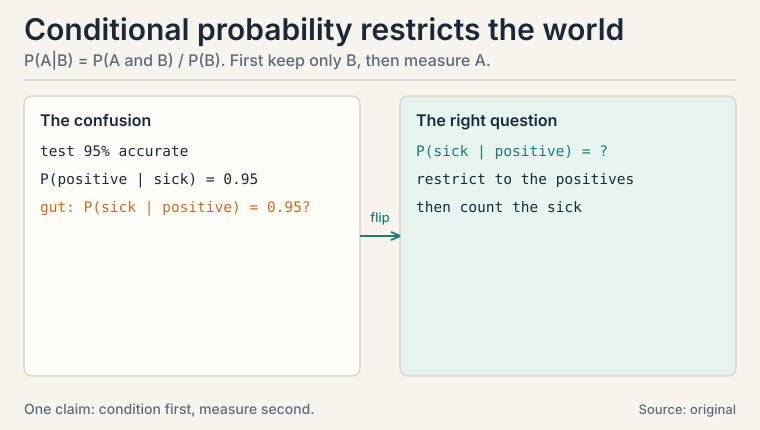
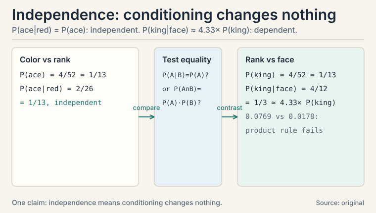
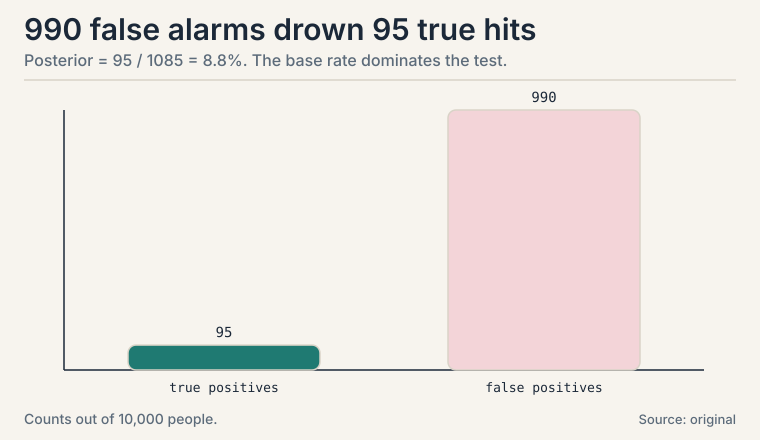
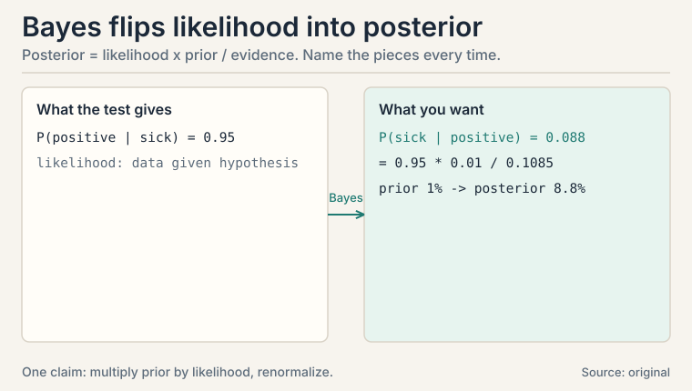
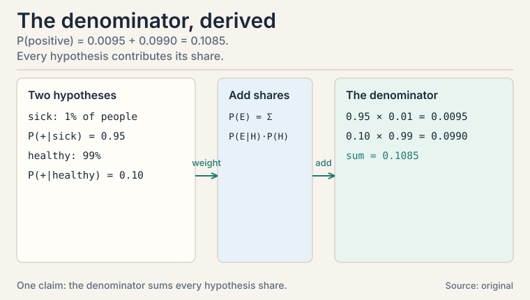
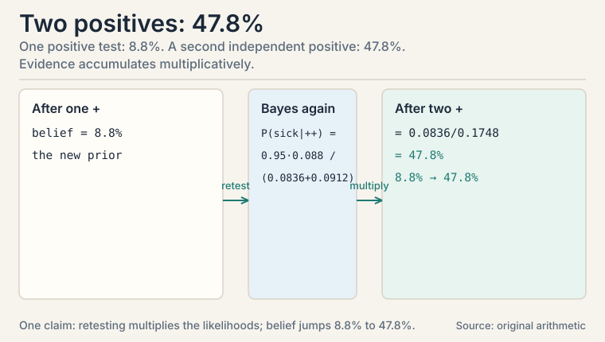
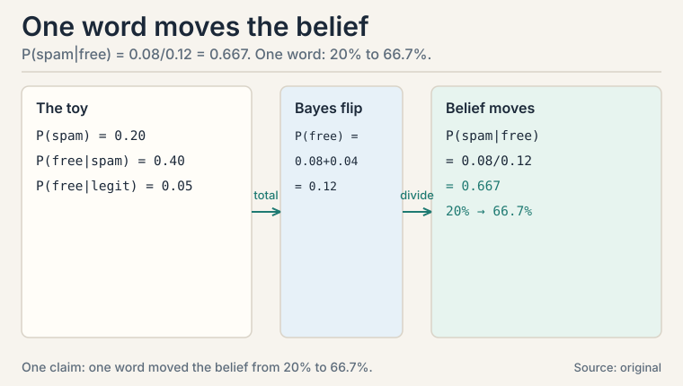
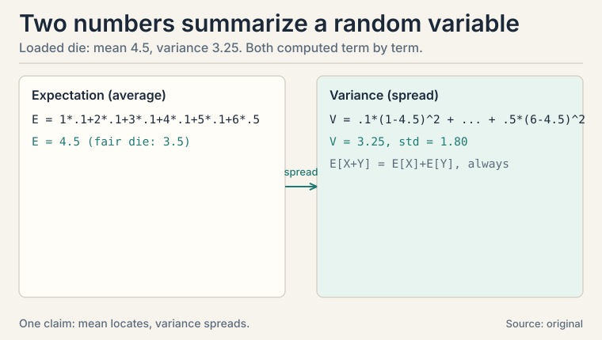
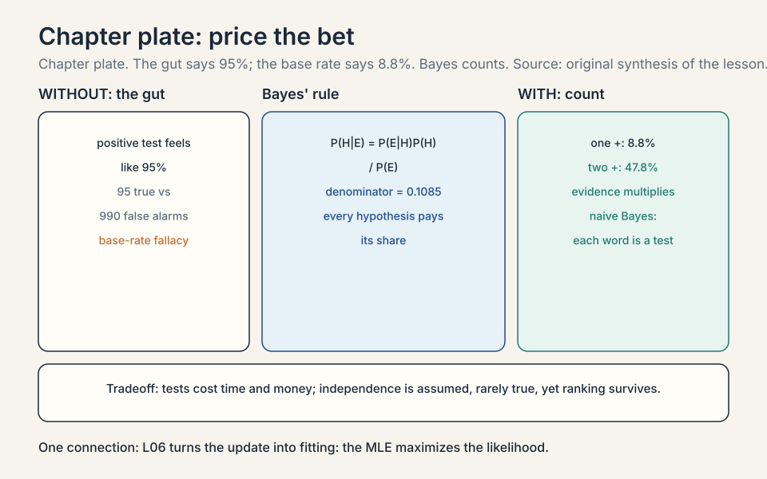

Lecture 5: Probability and Bayes' Theorem
Video blocked (ad-blocker or local file mode).
Watch on YouTubeVideo not loading? Watch on YouTube
The NPTEL lecture this chapter follows: Bayes' theorem, random variables, and the base-rate idea.
The task: reason under uncertainty
Every ML prediction is a bet. The model sees symptoms and bets on the disease. It sees an email and bets on spam. It sees pixels and bets on “cat”. The mathematics of betting correctly is probability: numbers between 0 and 1 that obey three rules.
A random variable is a quantity whose value is uncertain: the outcome of a die roll, tomorrow’s temperature, whether an email is spam. Write X for the variable and x for a value it takes. P(X = x) is the probability it takes that value. The three rules:
1. P(anything) is between 0 and 1. 2. P(all possibilities) = 1. Something happens. 3. P(A or B) = P(A) + P(B) when A and B cannot both happen.
That is the whole foundation. Everything in this lesson is built on these three.
First attempt: trust the test result
A patient tests positive for a rare disease. The test is 95% accurate. How likely is the patient sick?
The gut answer: 95%. This is the trap the lesson exists to fix. The test’s accuracy is P(positive | sick): the chance of a positive * given * sickness. The question asks the reverse: P(sick | positive). Confusing the two is the base-rate fallacy, and it is the most expensive probability mistake in applied ML.
Subchapter: conditional probability restricts the world
Conditional probability P(A | B) means the probability of A given that B happened: restrict the world to B, then measure A.
P(A | B) = P(A and B) / P(B)
Read it as a two-step procedure. Step 1: throw away every outcome where B did not happen. Step 2: measure A inside what remains. The denominator P(B) is the renormalization: it rescales the surviving world back to probability 1.
Concrete: a deck of cards. P(ace | red card): restrict to the 26 red cards, count the 2 red aces: 2/26 = 1/13. Same as the unconditional P(ace) = 4/52 = 1/13 here, because color and rank are independent. When they are not independent, conditioning changes everything: that is the whole next section.

Subchapter: independence, when conditioning changes nothing
The cards example hid a special case: P(ace | red card) = 1/13 equaled the unconditional P(ace) = 1/13. When conditioning changes nothing, the events are independent:
A and B independent <--> P(A | B) = P(A)
<--> P(A and B) = P(A) * P(B)
Color and rank are independent in a standard deck: knowing the card is red tells you nothing about its rank.
Now a dependent pair. P(king) = 4/52 = 1/13. But P(king | face card) = 4/12 = 1/3: knowing it is a face card multiplies the chance it is a king by about 4.33. The ratio is (4/12) / (4/52) = 13/3. Conditioning changed the number, so rank and “faceness” are dependent. Check the product rule: P(king and face) = 4/52 = 0.0769, but P(king) * P(face) = (4/52)(12/52) = 0.0178. The gap between the two is the dependence.
In ML, independence is usually an assumption, not a fact. Naive Bayes (CS229 L05) assumes features are independent given the class: that is the “naive” in its name. When the assumption holds, likelihoods multiply cleanly. When it does not, the posterior still often ranks correctly, which is why the method survives.

Where the gut breaks: the base rate dominates
Run the numbers. 10,000 people. 1% carry the disease: 100 sick, 9,900 healthy.
sick and test positive: 100 * 0.95 = 95 healthy but test positive: 9,900 * 0.10 = 990 (10% false alarm rate) total positives: 95 + 990 = 1,085 P(sick | positive) = 95 / 1,085 = 0.0876 = 8.8%
A positive result on a 95%-accurate test means an 8.8% chance of being sick. The 990 false alarms drown the 95 true hits because the disease is rare. The base rate, the 1%, dominated the test’s 95% accuracy. Anyone deploying a classifier on rare events who ignores this ships a false-alarm machine.

The key question
How do you flip a conditional probability: turn P(evidence | hypothesis), which tests and models give you, into P(hypothesis | evidence), which is what you actually want?
Subchapter: Bayes’ theorem, piece by piece
Bayes’ theorem is the flip:
P(H | E) = P(E | H) * P(H) / P(E)
Name each piece every time you use it:
- P(H), the prior. Belief before the evidence. 1% sick.
- P(E | H), the likelihood. How data looks if H is true. 95% of sick patients test positive. This is the model’s job: it predicts what data each hypothesis produces.
- P(E), the evidence. Total chance of seeing this evidence: 95 true positives + 990 false alarms, over 10,000 people. It just renormalizes so the posteriors sum to 1.
- P(H | E), the posterior. Belief after. 8.8%.
Learning, in the Bayesian view, is prior times likelihood, renormalized. In ML this is the engine of naive Bayes (CS229 L05): the prior is how common each class is, the likelihood is how each class generates features, and classification picks the class with the highest posterior. “Naive” because it assumes features are independent given the class, which factorizes one big likelihood into a product of small ones.

Subchapter: the law of total probability, where the denominator comes from
The piece-by-piece subchapter used P(positive) = 0.1085 without deriving it. Here is the derivation. The law of total probability splits any event across a partition of the world:
P(E) = P(E | H) * P(H) + P(E | not H) * P(not H)
The evidence arrives through every hypothesis, weighted by how likely each hypothesis is. Apply it to the test:
P(positive) = P(positive | sick) * P(sick)
+ P(positive | healthy) * P(healthy)
= 0.95 * 0.01 + 0.10 * 0.99
= 0.0095 + 0.0990
= 0.1085
That is the 0.1085. The two terms are the two counts from the earlier figure: 95 true positives and 990 false alarms, each over 10,000 people. Whenever a Bayes problem hands you a denominator, this law is where it was built. Write it out every time: it is the step where base-rate errors get caught.

Subchapter: two tests are better than one
A second independent positive test multiplies the likelihoods. After one positive: posterior 8.8%. Treat 8.8% as the new prior, apply the test again: P(sick | ++) = (0.95 * 0.088) / (0.950.088 + 0.100.912) = 0.0836 / 0.1748 = 47.8%. Two positives: 47.8%. The evidence accumulates multiplicatively. This is why real diagnosis retests, and why naive Bayes multiplies per-feature likelihoods: each feature is one more “test.”

Subchapter: the spam filter toy, one feature of naive Bayes
The medical test is Bayes with one “feature”: the test result. Text classification is Bayes with thousands. Shrink it to one word to see the bridge to naive Bayes (CS229 L05).
20% of incoming mail is spam. The word “free” appears in 40% of spam and in 5% of legitimate mail. An email containing “free” arrives. Spam or not?
P(spam | "free") = P("free" | spam) * P(spam) / P("free")
P("free") = 0.40 * 0.20 + 0.05 * 0.80
= 0.08 + 0.04 = 0.12
P(spam | "free") = 0.08 / 0.12 = 0.667
One word moves the belief from 20% to 66.7%. Naive Bayes repeats this for every word in the vocabulary and multiplies the likelihoods: P(“free” | spam) * P(“money” | spam) * … Each word is one more “test,” exactly like the second medical test in the previous subchapter. The independence assumption says the words do not interact: “free” and “money” are treated as separate tests. They are not, in reality. The classifier still works, because ranking rarely needs the exact probability.

Expectation and variance: summarize a random variable in two numbers
A random variable’s full distribution can be complex. Two numbers summarize most of what you need.
Subchapter: expectation, the long-run average
Expectation, E[X], is the long-run average. For values x_i with probabilities p_i: E[X] = sum of x_i * p_i.
A loaded die, worked by hand. Faces 1-5 are fair-ish, face 6 is heavy:
P(1..5) = 0.1 each, P(6) = 0.5
E[X] = 1*.1 + 2*.1 + 3*.1 + 4*.1 + 5*.1 + 6*.5
= 0.1 + 0.2 + 0.3 + 0.4 + 0.5 + 3.0 = 4.5
Mean 4.5, above the fair die’s 3.5, pulled by the heavy 6.
Subchapter: variance, the spread
Variance, Var(X), is the average squared distance from the mean: E[(X - E[X])^2]. It measures spread. Its square root is the standard deviation.
Var(X) = E[(X-4.5)^2]
= .1*(1-4.5)^2 + .1*(2-4.5)^2 + .1*(3-4.5)^2
+ .1*(4-4.5)^2 + .1*(5-4.5)^2 + .5*(6-4.5)^2
= .1*12.25 + .1*6.25 + .1*2.25 + .1*0.25 + .1*0.25 + .5*2.25
= 1.225 + 0.625 + 0.225 + 0.025 + 0.025 + 1.125 = 3.25
Variance 3.25, standard deviation 1.80. Two numbers capture the loading. Why square the distances? So that overshoots and undershoots do not cancel: spread must count both directions.

Subchapter: the three expectation facts ML reuses
E[aX + b] = a E[X] + b (linearity: constants pass through) E[X + Y] = E[X] + E[Y] (sums split, always, no independence needed) Var(X) = E[X^2] - (E[X])^2 (the computational shortcut)
Linearity of expectation needs no independence assumption. That is why it appears in every other proof in ML: you can always split an expectation of a sum. Most quantities in ML are sums: the loss over a dataset, the gradient over a batch, the return over an episode. Variance does not split so cleanly: Var(X + Y) = Var(X) + Var(Y) + 2 Cov(X, Y). The extra term is why L06 exists.
| Idea | Formula | Role |
|---|---|---|
| Conditional probability | P(A|B) = P(A,B)/P(B) | restrict the world, then measure |
| Bayes’ theorem | P(H|E) = P(E|H)P(H)/P(E) | flip likelihood into posterior |
| Prior / likelihood / posterior | belief before / evidence model / belief after | the vocabulary of learning |
| Expectation | sum of x_i * p_i | long-run average; splits over sums |
| Variance | E[(X - mean)^2] | spread; sqrt is standard deviation |
What is used where: the real systems
| Math idea | Where it appears | Why there |
|---|---|---|
| Bayes’ rule | Naive Bayes (CS229 L05) | priors x likelihoods; classify by posterior |
| Base rate | Fraud/disease classifiers | rare events: posteriors stay small |
| Two-test update | Ensemble methods | independent evidence multiplies |
| Expectation linearity | SGD theory | split loss and gradient over batches |
| Posterior | LLM next token | the model outputs P(token | context) |

No: about 8.8% in the worked example. The 95% is P(positive | sick). You want P(sick | positive). With 1% prevalence, 100 sick people yield 95 true positives but 9,900 healthy people yield 990 false alarms, so 95 out of 1,085 positives are truly sick. The base rate dominates. This is the base-rate fallacy, and it bites every rare-event classifier. Two levers. Raise the decision threshold so fewer healthy cases trigger alarms, or gather more evidence (a second independent test multiplies the likelihoods). Naive Bayes handles it automatically: the prior P(spam) is small, so the posterior stays small unless the likelihood ratio is overwhelming.
Prior P(sick) = 0.01: one in a hundred people is sick, before any test. Likelihood P(positive | sick) = 0.95: the test catches 95% of sick patients. Evidence P(positive) = (95 + 990)/10,000 = 0.1085: about 11% of everyone tests positive. Posterior = 0.95 * 0.01 / 0.1085 = 0.088: after the positive, 8.8%. Prior times likelihood, renormalized. It is the total probability of the evidence under all hypotheses: P(E) = sum over H of P(E|H) P(H). In the toy: 95 true positives + 990 false alarms, over 10,000 people. It just rescales so the posteriors sum to 1. When comparing two hypotheses you can often ignore it, since it is the same for both.
The prior is what you believed before seeing data: 1% disease prevalence. The likelihood is how each hypothesis generates data: 95% of sick patients test positive. The posterior is the updated belief: 8.8% after a positive test. Bayes’ theorem multiplies prior by likelihood and renormalizes. Training a generative classifier is estimating likelihoods. Predicting is computing posteriors. Update again, using 8.8% as the new prior: posterior = 0.950.088 / (0.950.088 + 0.10*0.912) = 47.8%. Evidence accumulates multiplicatively. This is the mechanism inside naive Bayes: each feature is another “test” multiplying into the posterior.
Because E[X + Y] = E[X] + E[Y] holds with zero assumptions: no independence needed. Most quantities in ML are sums or averages: the loss over a dataset, the gradient over a batch, the return over an episode. Linearity lets you push expectations inside sums everywhere, which is why proofs about stochastic gradient descent and generalization start with it. Only if X and Y are uncorrelated. In general Var(X+Y) = Var(X) + Var(Y) + 2 Cov(X,Y). The extra term is why L06 exists: correlated features inflate variance, and covariance measures exactly that inflation.
P(1..5) = 0.1 each, P(6) = 0.5. Mean: 1.1 + 2.1 + 3.1 + 4.1 + 5.1 + 6.5 = 4.5. Variance: average squared distance from 4.5: .112.25 + .16.25 + .12.25 + .10.25 + .10.25 + .52.25 = 3.25. Standard deviation 1.80. The heavy 6 pulls the mean above the fair 3.5 and inflates the spread. So overshoots and undershoots do not cancel. Without squaring, the average signed distance from the mean is always exactly zero: useless as a spread measure. Squaring (or absolute value) makes both directions count.
Base-rate shift. Precision depends on prevalence: the same likelihood ratio produces far more false alarms when fraud is rarer in production than in the test set. This is the medical-test lesson at scale: 990 false alarms drowned 95 true hits at 1% prevalence. Recalibrate the threshold on production prevalence, or reweight by the new prior. Monitor the flagged rate. If the model flags 5% of traffic but the historical fraud rate is 0.1%, either fraud exploded or the threshold is wrong for current prevalence. Track P(flagged) against the known base rate. Divergence is the alarm.
P(positive | sick) is “how good is the test at catching sick people”: the lab’s number, 95%. P(sick | positive) is “I tested positive, how worried should I be”: your number, 8.8%. The first describes the test. The second describes you. Mixing them up is a billion-dollar mistake in screening programs. When the base rates match: P(A|B) = P(B|A) exactly when P(A) = P(B). Otherwise the rarer event’s conditional is the smaller one. If a stakeholder quotes the lab’s 95% as your risk, ask for the prevalence: that is the missing number.
The law of total probability: P(positive) = P(positive | sick) P(sick) + P(positive | healthy) P(healthy) = 0.95 * 0.01 + 0.10 * 0.99 = 0.0095 + 0.0990 = 0.1085. Every hypothesis contributes its share of the evidence. The two terms are the two counts: 95 true positives and 990 false alarms per 10,000 people. Writing this out is the step where base-rate errors get caught. Prior: 20% of mail is spam. Likelihoods: “free” appears in 40% of spam, 5% of ham. Evidence: P(“free”) = 0.40.2 + 0.050.8 = 0.12. Posterior: 0.08/0.12 = 0.667. One word moved the belief from 20% to 66.7%. Naive Bayes repeats this per word and multiplies: each word is another independent “test.”
Recap: the whole lesson on one screen
- The task. Bet correctly under uncertainty: three rules, random variables, probabilities.
- First attempt. Trust the 95%-accurate test: a positive means 95% sick.
- Where it breaks. Base rate: 990 false alarms drown 95 true hits. Posterior is 8.8%, not 95%.
- The key question. How to flip P(evidence | hypothesis) into P(hypothesis | evidence)?
- The new idea. Bayes’ theorem: posterior = likelihood times prior, renormalized. Name the pieces every time. A second test multiplies in: 47.8%.
- The ML engine. Naive Bayes (CS229 L05): priors over classes, factorized likelihoods over features, classify by highest posterior. The spam toy: one word moves belief from 20% to 66.7%. Independence means conditioning changes nothing (cards). Dependence means it does (kings and face cards).
- Summarize in two numbers. Expectation (loaded die: 4.5) and variance (3.25), computed by hand. Linearity splits sums with no assumptions. The law of total probability builds every Bayes denominator: 0.0095 + 0.0990 = 0.1085.
- The price and the bridge. Bayes needs a prior and a likelihood. Bad priors or wrong likelihoods give confident wrong answers. L06 builds the distributions those likelihoods come from.
Go deeper
- StatQuest, “Bayes’ Theorem, Clearly Explained” (the embed above): https://www.youtube.com/watch?v=9wCnvr7Xw4E
- The NPTEL lecture for this lesson (frontmatter video): https://www.youtube.com/watch?v=0UxcDQz4sWQ
- Bishop, “Pattern Recognition and Machine Learning”, ch. 1: probability rules, Bayes, expectation.
- Deisenroth, Faisal, Ong, “Mathematics for Machine Learning”, ch. 6 (free): https://mml-book.github.io: discrete and continuous probability.
Official sources and further reading
Official: - “Essential Mathematics for Machine Learning” playlist, Lecture 49 (this lesson’s video): paper - NPTEL course page (111107137): https://nptel.ac.in/courses/111107137
Further reading: - Bishop, “Pattern Recognition and Machine Learning”, ch. 1: probability rules, Bayes, expectation. - Deisenroth, Faisal, Ong, “Mathematics for Machine Learning”, ch. 6 (free): - discrete and continuous probability.
Caveats. The medical-test numbers and the loaded die are the lesson’s own worked examples, in the standard textbook style. The lecture’s exact examples are [uncertain] (transcripts for L47-L50 were not recovered). The lecture-1 transcript confirms the course frames probability as underpinning all ML algorithms.
Connections to the other courses
- CS229 L05: naive Bayes classifier: priors, likelihoods, the independence assumption, Laplace smoothing.
- CS229 L06: the Bayesian view of regularization: priors over weights become penalty terms (ridge regression as MAP under a Gaussian prior).
- CS329H: choice theory and Bayesian decision theory build directly on posterior reasoning.
Coverage map
Every lecture concept, and where this lesson covers it:
| Lecture concept | Covered in | Lines |
|---|---|---|
| probability as the math of betting, three rules | The task: reason under uncertainty | l05:28-48 |
| base-rate fallacy, the 95% gut trap | First attempt: trust the test result | l05:49-59 |
| conditional probability, restrict then measure | Subchapter: conditional probability restricts the world | l05:60-81 |
| independence vs dependence, product rule check | Subchapter: independence | l05:82-112 |
| the base rate dominates: 95 hits vs 990 false alarms | Where the gut breaks: the base rate dominates | l05:113-133 |
| Bayes’ theorem, prior/likelihood/evidence/posterior | Subchapter: Bayes’ theorem, piece by piece | l05:140-168 |
| law of total probability, the 0.1085 derived | Subchapter: the law of total probability | l05:169-197 |
| sequential updates, evidence multiplies | Subchapter: two tests are better than one | l05:198-207 |
| spam filter toy, the naive Bayes bridge | Subchapter: the spam filter toy | l05:208-237 |
| expectation, the loaded die mean 4.5 | Subchapter: expectation, the long-run average | l05:243-259 |
| variance 3.25, standard deviation 1.80 | Subchapter: variance, the spread | l05:260-279 |
| linearity of expectation, Var(X) shortcut | Subchapter: the three expectation facts ML reuses | l05:280-302 |
| what is used where: naive Bayes, base rate, SGD, LLM posterior | What is used where | l05:303-314 |
| 8 interview Q&As with follow-ups | QA blocks | l05:315-362 |
| full-lesson recap | Recap | l05:363-372 |
Sources
- VIDEOEssential Mathematics for Machine Learning: Lecture 49 (Bayes' theorem and Random variables)
- SUPPLEMENTBishop, Pattern Recognition and Machine Learning, ch. 1
- SUPPLEMENTDeisenroth, Faisal, Ong, Mathematics for Machine Learning, ch. 6